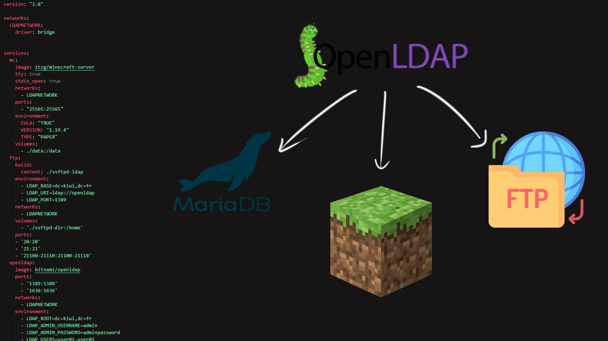
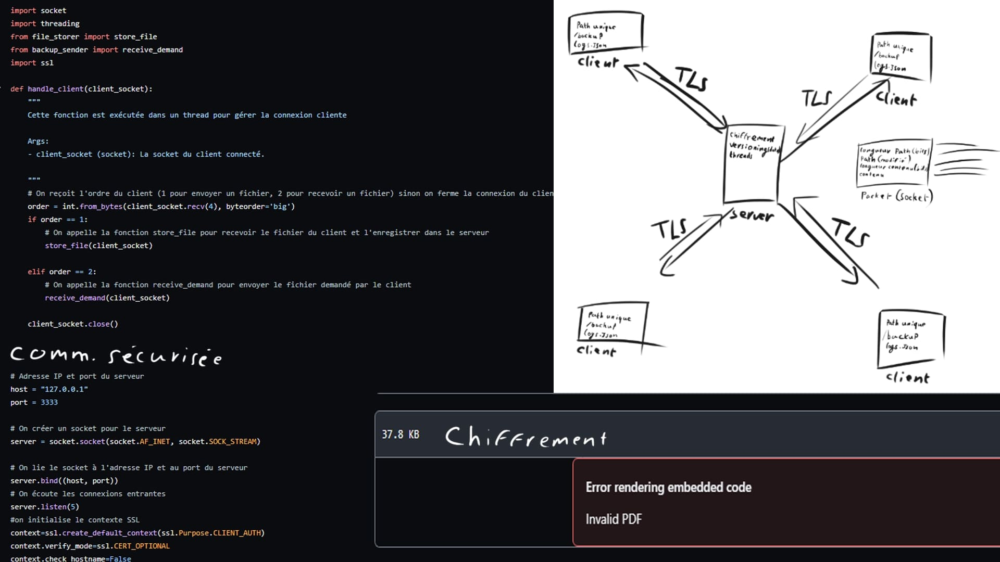
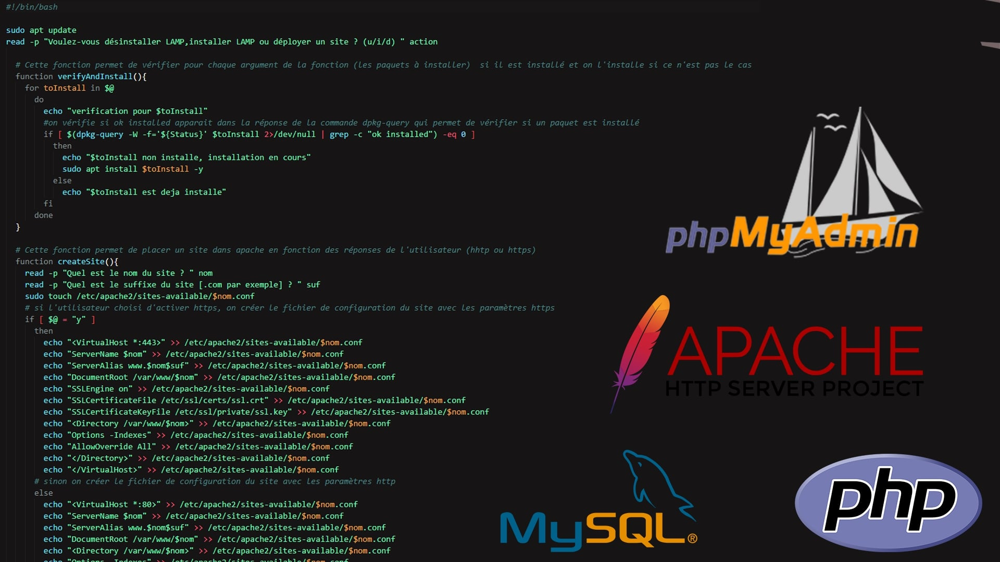
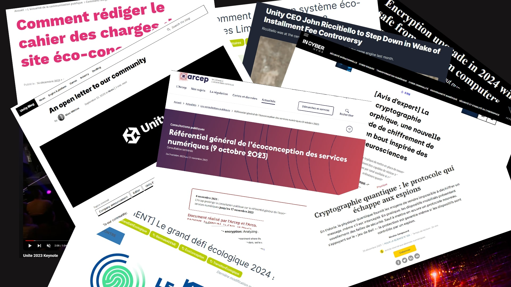
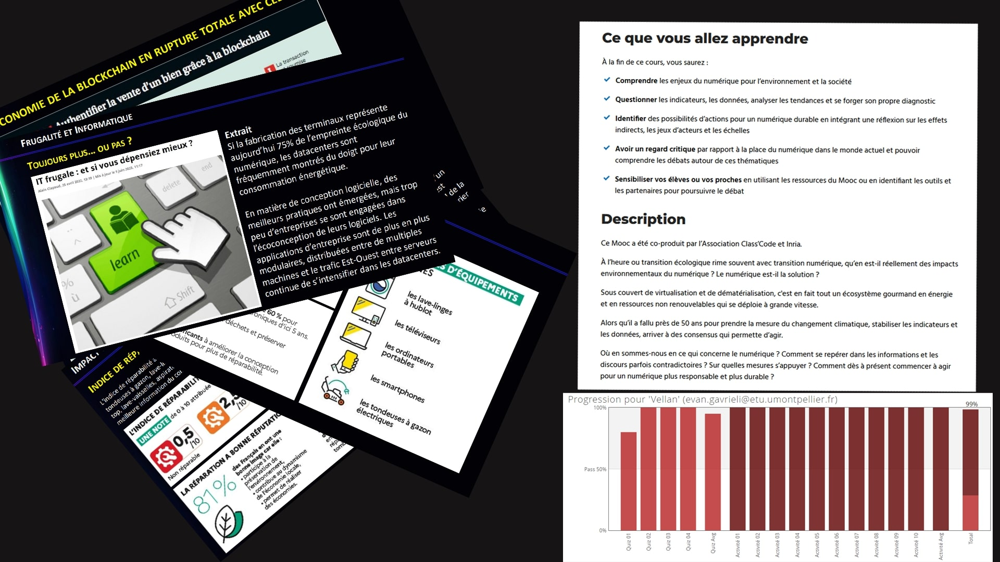

- SAE
- Mettre en place des services en utlisant LDAP

- TD Sauvegarde
- Créer une application permettant d'effectuer une sauvegarde

- Script d'installation
- Créer un script permettant d'automatiser l'installation de LAMP

- Veille informationnelle
- Suivi d'actualité sur certains sujets

- TD économie durable
- TDs questionnants sur les enjeux écologiques du numérique